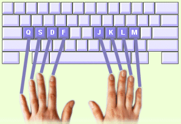

De middelste rij op het toetsenbord dient als basispositie voor uw vingers, hier dient u uw vingers te laten rusten. Deze rij noemen we de "basisrij". Vanaf deze basisrij kunnen alle andere toetsen worden benaderd.
Plaats nu uw vingers op de basisrij (zie afbeelding):
1. Plaats de vingers van uw linkerhand op de toetsen: Q S D F
2. Plaats de vingers van uw rechterhand op de toetsen: J K L M
3. Laat beide duimen lichtjes op de spatiebalk rusten
4. Houd uw polsen recht en uw vingers een klein beetje gebogen
Tip! Voelt u de kleine bobbeltjes op de F en de J toets? Hiermee kunt u zonder te kijken altijd de basisrij vinden. |
 |